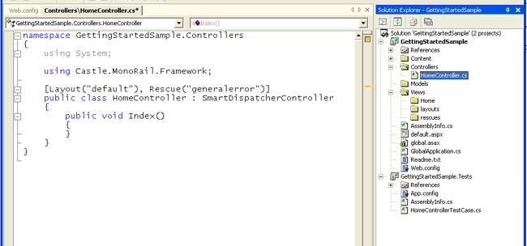
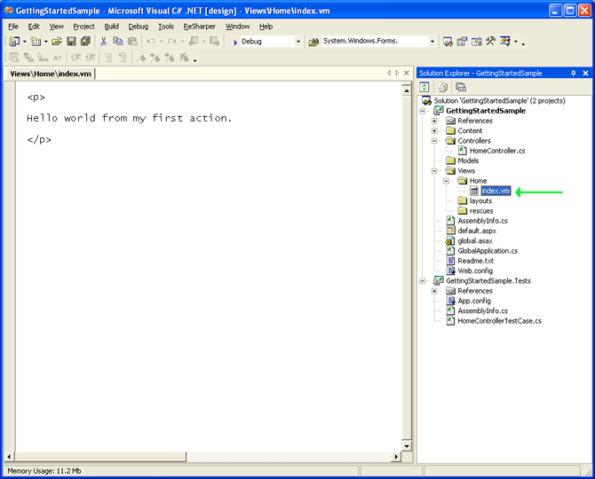
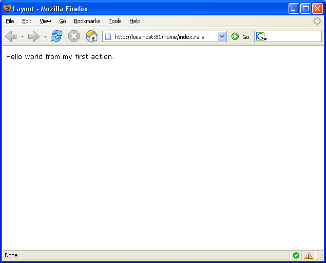

Table of contents
- 1 Creating the view and the layout view
- 1.1 Creating the view for the Index action on the Home controller
- 1.2 Creating the layout
- 2 Running the application
- 2.1 Running with IIS or on Mono
- 3 More about actions and views
- 4 Creating the rescue view
- 5 Take a breath
Your first controller and view
For any MonoRail application, the entry point is the Controller. That is the biggest difference from WebForms development where the entry point is the page itself. With MonoRail the controller is executed and decided whether it should render a view and which view. So the controller is the one with control over the application flow, not the pages/views. That reduces the views to their original role: present information, nothing more and nothing less.
It is time to create your first controller. If you have used the wizard to create the project, the controller is already there. Anyway, the controller class should be named HomeController and should exist under the Controllers folder:

Here is the Controller code:
namespace GettingStartedSample.Controllers { using System; using Castle.MonoRail.Framework; [Layout("default"), Rescue("generalerror")] public class HomeController : SmartDispatcherController { public void Index() { } } }
The controller name is, by default, grabbed from the type name. In this case the controller name from MonoRail's point-of-view is simply Home. This controller exposes just one action: Index. Actions are public non-static methods exposed by the controller class.
Although the action code block is empty, there is a behavior implied. When this action is executed, it will render a view named Index. Yes, the action name is used, as convention, to decide the view to render. The action can override this and select a different view using the RenderView method.
Before digging into this, let's create the view.
Creating the view and the layout view
You, as a careful reader that we know you are, have noticed the attributes used on the controller class:
[Layout("default"), Rescue("generalerror")] public class HomeController : SmartDispatcherController
Those defines the following:
- For each view rendered, use the layout named default which lies on the layouts folder
- If any unhandled exception is threw by the action, render the rescue view generalerror which lies on the rescues folder
As stated before, we are using NVelocity view engine. NVelocity is a very simple template engine that supports condition statements, assignments, array creations, and iterate over collections. That is definitely all you need when all you want to do is rendering a view. You can learn more about NVelocity (and how we have improved it) on its page.
Creating the view for the Index action on the Home controller
The views are bound to a controller. In our case we are dealing with the Home controller, so on the Views folder, create a (or use the existing) home folder and create an index.vm file there:

Here is the home.vm contents:
<p> Hello world from my first action. </p>
You can make Visual Studio use the Html editor for .vm files. Use the Open With... option from the context menu.
Fairly simple view. Note that we did not used the html and body tags. We will left that to the layout.
Creating the layout
A layout defines the outter content of a rendered view. You can have multiples layouts on a project, and they should lie on the layouts folder.
Our first layout is very simple, and should be saved as default.vm on the layouts folder.
<!DOCTYPE html PUBLIC "-//W3C//DTD XHTML 1.1//EN" "http://www.w3.org/TR/xhtml11/DTD/xhtml11.dtd"> <html> <head> <meta http-equiv="Content-Type" content="text/html; charset=iso-8859-1" /> <title>Layout</title> <link rel="stylesheet" href="$siteRoot/Content/css/base.css" /> </head> <body> $childContent </body> </html>
The $childContent variable defines where the view content should be included on the layout. The $siteRoot variable will represent the root of the application. If the web application is using a virtual dir for example, it will be the virtual dir name. Otherwise it would evaluate to a simple /.
Remember that our controller used the [Layout("default")]? That will make every view rendered from our controller to use this layout.
Running the application
If you created the application with the wizard, just hit Debug\Start or F5. In Visual Studio 2003, Cassini will run. In VS 2005 the internal web server will run. Both allow debug.
On the browser, go to the application url and enter the controller name and the action name plus the extension you have selected. For example:
http://localhost:8081/home/index.rails
The browser should render the view content with the layout applied:

Running with IIS or on Mono
If you want to run the application using Microsoft Internet Information Services, you must associate the extension you selected (ie rails or castle) with the ASP.Net ISAPI.
For more information on this check the Installing document on the User's Guide.
More about actions and views
Views are pretty useless unless you pass parameters and data to it. Each view engine will treat parameters differently. With NVelocity the parameters will turn into variables.
Let's create another action on our HomeController:
[Layout("default"), Rescue("generalerror")] public class HomeController : SmartDispatcherController { public void Index() { } public void DataToTheView() { PropertyBag["name"] = "John Doe"; PropertyBag["today"] = DateTime.Now; RenderView("data"); } }
The DataToTheView action uses the PropertyBag to pass data to the view. It then invokes RenderView to customize the view to render. If we haven't invoked this one, the view name would be datatotheview.
Now lets create the data.vm which should lie on the views\home folder:
<h3> Hello $name! </h3> <h4> Today is $today.ToShortDateString() </h4>
Run the application and go to the home/datatotheview.rails to test your work.
Creating the rescue view
Our controller also uses a rescue. Lets create the rescue view to report errors nicely.
Create a generalerror.vm on the views\rescues folder:
#macro(showexception $exc) <b>$exc.GetType().Name</b> Message: $exc.Message #if($exc.StackTrace) StackTrace: $exc.StackTrace #end #if($exc.InnerException) <b>Inner exception:</b> #set($inner = $exc.InnerException) #showexception($inner) #end #end <h2>Unexpected error happened</h3> <p> This is the rescue page. See the exception details below </p> <pre> #set($exception = $context.LastException) #showexception($exception) </pre>
Now lets force an exception on a new action just to see the rescue working.
[Layout("default"), Rescue("generalerror")] public class HomeController : SmartDispatcherController { public void Index() { } public void ErroneousAction() { throw new Exception("Forced exception to test Rescue"); } public void DataToTheView() { PropertyBag["name"] = "John Doe"; PropertyBag["today"] = DateTime.Now; RenderView("data"); } }
Run the application and go to the home/erroneousaction.rails.
Take a breath
That was a crash course on controllers and views. More in-depth information can be found on the documentation.
Proceed with Using the SmartDispatcherController.
Generated by Castle Anakia.
Sponsored by  Castle Stronghold.
Castle Stronghold.